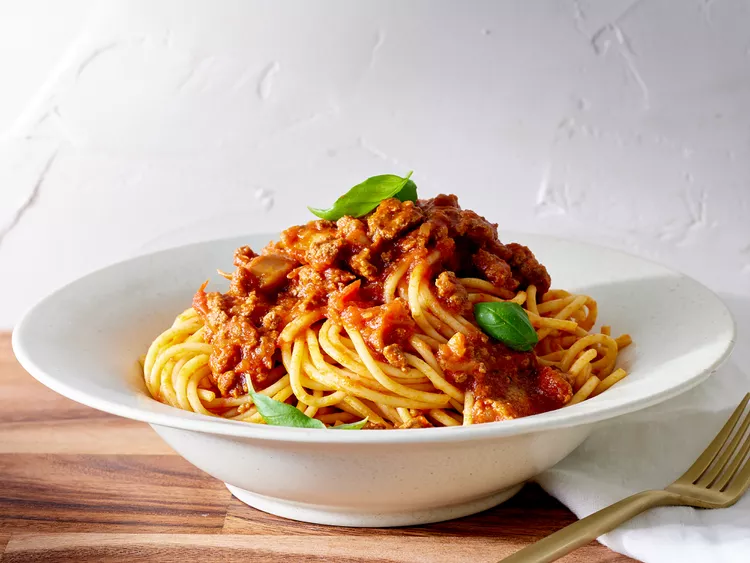

Spaghetti

Description
This delicious tomato sauce for spaghetti simmers over low heat for a rich and meaty homemade taste.
Ingredients
- 1 pound lean ground beef
- 2 ½ cups chopped tomatoes
- 1 ⅓ (6 ounce) cans tomato paste
- 1 (4.5 ounce) can sliced mushrooms
- 2 tablespoons dried minced onion
- ¾ teaspoon white sugar
- Kosher salt
- ¼ teaspoon ground black pepper
- 1 tsp dried oregano
- ⅛ teaspoon garlic powder
- 12 ounces spaghetti
Steps
- Heat a large skillet over medium-high heat. Cook and stir ground beef in the hot skillet until browned and crumbly, 5 to 7 minutes. Drain and discard grease.
- Transfer beef into a large pot over low heat; stir in tomatoes, tomato paste, mushrooms, onion, salt, oregano, sugar, pepper, and garlic powder. Cover and simmer, stirring occasionally, for 2 hours.
- Bring a large pot of lightly salted water to a boil. Cook spaghetti in the boiling water, stirring occasionally, until tender yet firm to the bite, about 12 minutes; drain. Serve meat sauce over spaghetti.